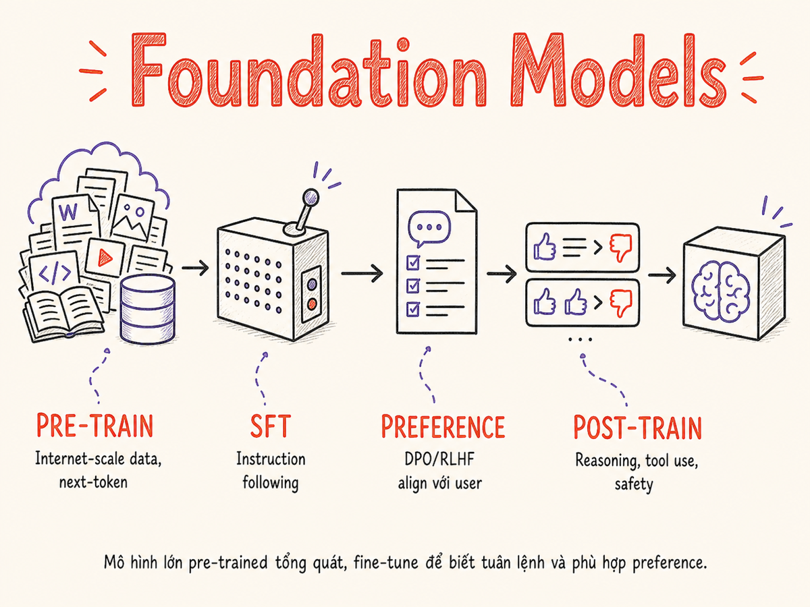

Foundation Models cơ bản
Hiểu Foundation Model là gì, vòng đời training của một LLM, Scaling Laws, Emergent Abilities, và cách chọn giữa closed-source vs open-source.

2.1 Foundation Model là gì?
Foundation Model (còn gọi là base model hay pre-trained model) là một mô hình AI được training trên lượng dữ liệu khổng lồ theo phương pháp self-supervised, tạo ra một "nền tảng" chung có thể được fine-tune hoặc prompting để giải quyết rất nhiều task khác nhau mà không cần phải train lại từ đầu.
Khái niệm này được Stanford đặt tên chính thức vào năm 2021 trong báo cáo "On the Opportunities and Risks of Foundation Models". Trước đó, người ta thường gọi chúng là "large pre-trained models" hay đơn giản là "GPT-n".
Giống như nền móng của tòa nhà — một foundation model làm nền cho nhiều ứng dụng phía trên (chat, code gen, search, summarization…) thay vì mỗi ứng dụng phải xây móng riêng.
4 đặc điểm cốt lõi
① Quy mô (Scale)
Hàng tỷ đến hàng nghìn tỷ parameters. Training trên hàng trăm tỷ đến hàng nghìn tỷ tokens. Chi phí training một frontier model có thể lên đến hàng trăm triệu USD.
② Self-supervised learning
Không cần label thủ công. Model tự tạo supervision signal từ dữ liệu thô — ví dụ: predict token tiếp theo, hoặc predict phần bị che (masked language model).
③ Transferable (chuyển đổi được)
Sau khi pre-train, model mang tri thức tổng quát có thể áp dụng cho hàng trăm downstream tasks mà chỉ cần fine-tune nhỏ hoặc chỉ cần prompting.
④ Emergent abilities
Xuất hiện các khả năng không được dạy trực tiếp, chỉ nổi lên khi model đạt ngưỡng quy mô nhất định. Xem mục 2.4 để hiểu rõ hơn.
Các Foundation Model phổ biến hiện nay
- GPT-5.5, GPT-5.4, GPT-5 OpenAI — flagship models của OpenAI; GPT-5.5 là model mạnh nhất hiện tại, context lên đến 1M tokens. GPT-4o/4.1/o4-mini vẫn khả dụng qua API ở giá rẻ hơn, dùng cho cost-sensitive tier
- Claude Opus 4.7, Claude Sonnet 4.6, Claude Haiku 4.5 Anthropic — nổi tiếng về safety, instruction-following tốt; Opus 4.7 & Sonnet 4.6 context 1M tokens
- Gemini 3 Flash, Gemini 3.5 Flash, Gemini 2.5 Pro Google — tích hợp sâu với Google ecosystem, context 1M–2M tokens, multimodal native; Gemini 3 Flash là default model mới
- Grok 4.3 xAI — flagship của xAI từ tháng 4/2026; context 1M tokens, tích hợp với X/Twitter data, thinking mode cho reasoning phức tạp
- Llama 4 Scout, Llama 4 Maverick Meta — family mạnh nhất trong open-weight; MoE architecture, natively multimodal; Scout có context 10M tokens, fit vào 1 GPU H100
- Mistral Large 3 (675B MoE), Mistral Small 4 Mistral AI — Large 3 là MoE 41B active/675B total params; Small 4 tích hợp reasoning + vision + coding vào một model
- DeepSeek-V4, DeepSeek-V3.2, DeepSeek-R1 DeepSeek — V4 (tháng 4/2026) hỗ trợ context 1M tokens; R1 dùng pure RL để đạt reasoning tốt; gây chấn động đầu 2025
- Qwen3.7, Qwen3.6, Qwen3 Alibaba — mạnh về đa ngôn ngữ; Qwen3.7-Max-Preview (tháng 5/2026) là reasoning model với context 1M tokens; Apache 2.0
- Gemma 4 Google — released tháng 4/2026 (Apache 2.0); sizes 5B–31B; lightweight, tối ưu cho edge/local; dễ fine-tune với ít dữ liệu
- Phi-4, Phi-4-reasoning, Phi-4-multimodal Microsoft — small model family (~14B) nhưng hiệu suất cao; Phi-4-multimodal hỗ trợ text + audio + vision; Phi-4-reasoning vượt o1-mini
2.2 Vòng đời training của một LLM
Một LLM production hiện đại không đơn giản chỉ là "train một mô hình rồi deploy". Nó trải qua ít nhất 3–4 giai đoạn lớn, mỗi giai đoạn có mục tiêu khác nhau.
Giai đoạn 1: Pre-training
Đây là giai đoạn tốn kém nhất — chiếm 95%+ tổng chi phí training. Model học bằng cách predict token tiếp theo (autoregressive) trên corpus khổng lồ: Common Crawl, Wikipedia, books, GitHub, StackOverflow, v.v. Sau giai đoạn này, model có "world knowledge" nhưng chưa biết cách follow instruction hay hội thoại một cách tự nhiên.
Giai đoạn 2: Supervised Fine-Tuning (SFT)
Dùng dataset nhỏ hơn nhiều (~10K–1M examples) gồm các cặp (instruction, response)
do human viết hoặc tổng hợp. Mục tiêu: dạy model theo instruction, trả lời đúng format,
giữ conversation context. Ví dụ: OpenAI dùng InstructGPT approach; Anthropic dùng
Constitutional AI.
Giai đoạn 3: Preference Tuning
Aligning model với preference của con người — làm cho model "helpful, harmless, honest". Có nhiều kỹ thuật:
- RLHF (Reinforcement Learning from Human Feedback) — InstructGPT, ChatGPT: train reward model từ human rankings, sau đó dùng PPO để tối ưu language model
- DPO (Direct Preference Optimization) — đơn giản hơn RLHF, không cần reward model riêng; dùng trực tiếp preference pairs (chosen vs rejected)
- RLAIF (RL from AI Feedback) — dùng một LLM khác làm "AI judge" để tạo feedback thay vì human, giúp scale rẻ hơn
Giai đoạn 4: Specialized post-training
Tùy mục tiêu: fine-tune thêm cho reasoning (DeepSeek-R1 dùng pure RL với verifiable rewards), coding (CodeLlama, DeepSeek-Coder), ngôn ngữ cụ thể, hoặc domain (y tế, pháp lý). Các "thinking models" như GPT-5 series, DeepSeek-R1, Qwen3.7 được train ở đây để tạo chain-of-thought nội bộ trước khi trả lời.
Bạn hầu như không tham gia vào giai đoạn 1-3. Nhưng hiểu pipeline này giúp bạn hiểu tại sao model có những behavior nhất định — tại sao GPT-4 "ngoan" hơn Llama base, tại sao reasoning models suy nghĩ lâu hơn, tại sao fine-tuned models thường kém creative hơn base models.
2.3 Scaling Laws
Scaling Laws là tập hợp các quan sát thực nghiệm về việc hiệu suất của LLM thay đổi như thế nào khi tăng quy mô: số lượng parameters (N), lượng training data (D), và compute (C).
Kaplan et al. 2020 — OpenAI
Bài báo "Scaling Laws for Neural Language Models" của OpenAI phát hiện rằng model loss giảm theo power law khi tăng N, D, hoặc C — và quan trọng hơn, ba chiều này có thể đánh đổi cho nhau một cách dự đoán được. Kết luận ban đầu: với fixed compute budget, nên ưu tiên tăng model size hơn là tăng training data.
Chinchilla (Hoffmann et al. 2022) — DeepMind
Chinchilla "lật ngược" kết luận Kaplan. Với cùng compute budget, nên scale đồng đều giữa model size và data:
D ≈ 20 × N
Tokens training tối ưu ≈ 20 lần số parameters
Ví dụ: model 7B parameters nên được train trên ≈ 140B tokens để "compute-optimal". Llama 2 (7B) được train trên 2T tokens — over-trained so với Chinchilla optimal, nhưng đây là chiến lược cố ý vì inference cost thấp hơn với model nhỏ hơn.
Với các công ty phục vụ hàng triệu user, inference cost quan trọng hơn training cost. Nên "over-train" model nhỏ hơn trên nhiều data hơn để có model nhỏ nhưng mạnh — cost để serve rẻ hơn rất nhiều. Đây là lý do Llama và Mistral models nhỏ nhưng performant.
Inference-time scaling — Reasoning Models
Frontier mới nhất (2024-2025): thay vì chỉ scale training compute, có thể scale inference-time compute bằng cách cho model "think longer". GPT-5 series (tích hợp reasoning vào model chính), DeepSeek-R1, Gemini Thinking đều dùng approach này — tạo chain-of-thought nội bộ trước khi trả lời. o3 đã được kế thừa bởi GPT-5 trong lineup của OpenAI.
Hệ quả với AI Engineer: reasoning models tốn token nhiều hơn (và đắt hơn), nhưng mạnh hơn đáng kể với các task phức tạp như toán, code, logic. Dùng cho đúng use case — không nhất thiết cho mọi task.
Scaling Laws có giới hạn không?
Có bằng chứng cho thấy scaling laws "khuỵu" ở một số domain và quy mô. "Data wall" — chạm giới hạn dữ liệu internet chất lượng — là lo ngại thực sự. Một số nhà nghiên cứu cho rằng phải chuyển sang synthetic data, multimodal data, hoặc kiến trúc mới. OpenAI o-series và inference-time scaling là một hướng đi để thoát khỏi bottleneck của pre-training data.
2.4 Emergent Abilities
Emergent abilities là các khả năng chỉ xuất hiện khi model đạt ngưỡng quy mô nhất định — không có ở model nhỏ, đột ngột có ở model lớn — như thể "bật công tắc" hơn là cải thiện dần dần.
Schaeffer et al. (2023) lập luận rằng nhiều "emergent abilities" là artifact của việc dùng discontinuous metrics (như exact-match accuracy). Khi dùng continuous metrics (log-likelihood), sự cải thiện là mượt mà và có thể dự đoán được. Tuy nhiên, từ góc độ practical, hành vi quan sát được vẫn rất quan trọng — threshold effects có thật.
Các emergent abilities quan trọng với AI Engineer
In-context Learning (ICL)
Model học từ ví dụ trong prompt mà không cần update weights. Few-shot prompting chỉ hoạt động tốt ở model đủ lớn. Đây là nền tảng của hầu hết prompt engineering techniques.
Chain-of-Thought (CoT)
Khi được hướng dẫn "think step by step", model lớn thực sự cải thiện accuracy trên các bài toán reasoning — trong khi model nhỏ không. Nền tảng của reasoning models hiện đại.
Instruction Following
Khả năng hiểu và follow complex instructions (format JSON, viết code theo spec, đóng vai nhân vật) chỉ đáng tin cậy ở model đủ mạnh + SFT.
Tool Use & Code Gen
Gọi external APIs, viết code runnable, debug errors. Foundation cho agentic systems. Models nhỏ thường thiếu reliability cần thiết.
Từ góc độ AI Engineer, điều này có nghĩa: đừng dùng model nhỏ/rẻ cho mọi task. Những task cần reasoning, instruction-following phức tạp, hay tool use cần model đủ mạnh. Biết chọn đúng model tier là một kỹ năng quan trọng.
2.5 Open-source vs Closed-source
Một trong những quyết định đầu tiên khi bắt đầu dự án AI: dùng model nào? Hai lựa chọn lớn là closed-source via API và open-weight self-hosted. (Lưu ý: "open-source" trong LLM thường chỉ có nghĩa là weights được publish, không phải toàn bộ training code và data.)
| Tiêu chí | Closed-source API | Open-weight Self-hosted |
|---|---|---|
| Hiệu suất frontier | ✓ Dẫn đầu GPT-5.5, Claude Opus 4.7, Gemini 3.5 Flash | Gần đây rút ngắn khoảng cách đáng kể (Llama 4, DeepSeek-V3) |
| Chi phí | Pay-per-token, đắt ở scale lớn; dễ dự toán nhỏ | Đắt upfront (GPU), rẻ hơn ở high-volume; phức tạp hơn |
| Latency | Phụ thuộc provider; thường 0.5–3s TTFT; rate limits | Kiểm soát hoàn toàn; có thể optimize cho latency |
| Data privacy | Rủi ro Data gửi lên third-party | ✓ Kiểm soát hoàn toàn — on-prem, VPC |
| Customization | Fine-tuning hạn chế (OpenAI fine-tune API) | ✓ Hoàn toàn — fine-tune, merge, quantize |
| Reliability | SLA của provider; outages ảnh hưởng bạn | Tự chịu trách nhiệm; cần MLOps team |
| Time to market | ✓ Nhanh nhất — vài dòng code là có | Setup infra tốn thời gian; cần DevOps/MLOps |
| Vendor lock-in | Rủi ro cao API changes, price hikes | Không bị lock-in; có thể swap models |
Rule of thumb để chọn
- Bắt đầu với closed-source API nếu đang prototype, team nhỏ, hoặc cần frontier performance ngay. Dùng OpenAI/Anthropic/Google.
- Chuyển sang open-weight khi: data có tính nhạy cảm cao, volume đủ lớn để amortize GPU cost, cần fine-tuning sâu, hoặc cần kiểm soát model version (quan trọng cho reproducibility).
- Dùng cả hai: dùng API cho tasks phức tạp (orchestration, planning), self-host model nhỏ hơn cho tasks lặp lại nhiều (classification, extraction).
- Tham khảo LMSYS Chatbot Arena leaderboard để so sánh hiệu suất theo use case cụ thể — không có model nào tốt nhất cho mọi task.
Wrap mọi LLM call đằng sau một interface chung (adapter pattern). Dùng
LiteLLM hoặc tự viết adapter layer. Điều này giúp bạn swap model
mà không cần refactor toàn bộ code — đặc biệt quan trọng vì model landscape
thay đổi rất nhanh.
2.6 Modalities
Foundation models không chỉ xử lý text. Hiểu các modality khác nhau giúp bạn chọn đúng model cho từng use case và thiết kế system phức tạp hơn.
Text LLMs
Input và output đều là text (token). Bao gồm hầu hết các task: chat, summarization, translation, code generation, classification, extraction.
Models: GPT-5.5, Claude Opus 4.7/Sonnet 4.6, Llama 4 Scout/Maverick, Mistral Large 3, DeepSeek-V4, Gemma 4…
Lưu ý: "text" ngày nay thường bao gồm cả tool_use và
structured output (JSON mode) — không còn là plain text thuần túy.
Vision-Language Models (VLM)
Nhận hình ảnh + text làm input, output text. Dùng cho: OCR, image Q&A, chart understanding, UI screenshot analysis, document parsing.
Models: GPT-5.5 (vision), Claude Opus 4.7/Sonnet 4.6 (vision), Gemini 3.x (native multimodal), Llama 4 Scout/Maverick (natively multimodal), Qwen3.7, Phi-4-multimodal, InternVL2.
VLM rất mạnh cho document automation: parse hóa đơn, form, contract trực tiếp từ ảnh scan — không cần OCR pipeline riêng.
Audio: STT & TTS
Speech-to-Text (STT / ASR): Whisper (OpenAI open-source) là model phổ biến nhất; chạy local hoặc qua API. Deepgram, AssemblyAI, Google STT là alternatives cloud-based.
Text-to-Speech (TTS): OpenAI TTS API (tốt nhất hiện tại cho tiếng Anh), ElevenLabs (clone voice), Coqui TTS (open-source).
Realtime audio: GPT-4o Realtime API — speech-in, speech-out latency thấp; dùng cho voice assistants. Gemini Live tương tự.
Embedding Models
Convert text thành vector numbers. Không "generate" — chỉ encode. Dùng cho: semantic search, RAG retrieval, clustering, dedup.
Models nổi tiếng: text-embedding-3-large (OpenAI), voyage-3 (Anthropic),
Cohere Embed v3, BGE-M3 (BAAI, open-source multilingual),
nomic-embed.
Embedding models là một trong những thứ quan trọng nhất trong RAG systems. Chọn embedding model phù hợp với ngôn ngữ của data (tiếng Việt cần multilingual model).
Video & Natively Multimodal
Video understanding: Gemini 2.5 Pro/Gemini 3 Flash có thể nhận video dài làm input; dùng cho video Q&A, transcript với visual context, video surveillance.
Natively multimodal: Thay vì "LLM + vision adapter", các model như Gemini 3.x, GPT-5.5, và Llama 4 được train từ đầu trên multiple modalities, dẫn đến cross-modal reasoning tốt hơn.
Image generation: DALL-E 3 (OpenAI), Midjourney, Stable Diffusion (open-source), Flux — không phải LLMs mà là separate diffusion/flow-matching models; thường được orchestrate cùng với LLM trong agentic workflows.
Tóm tắt
- Foundation Model = model lớn, pre-trained self-supervised trên data khổng lồ, có thể adapt cho nhiều task mà không cần train lại từ đầu.
- LLM đi qua pipeline 4 giai đoạn: Pre-training (tốn nhất) → SFT → Preference Tuning (RLHF/DPO) → Specialized post-training.
- Chinchilla rule: D ≈ 20×N — train-optimal cần tokens ≈ 20× số parameters. Nhưng inference-optimal có thể over-train model nhỏ để giảm serving cost.
- Emergent abilities (ICL, CoT, tool use) chỉ đáng tin cậy ở model đủ lớn — đây là lý do không phải model nào cũng "làm được mọi thứ".
- Bắt đầu với closed API (nhanh, frontier perf), chuyển sang open-weight khi cần privacy, cost optimization, hoặc fine-tuning sâu. Thiết kế model-agnostic từ đầu.
- Ngoài text, cần biết: VLM (vision+text), Whisper/STT, TTS, Embedding models (quan trọng cho RAG) — mỗi loại có use case và trade-off riêng.